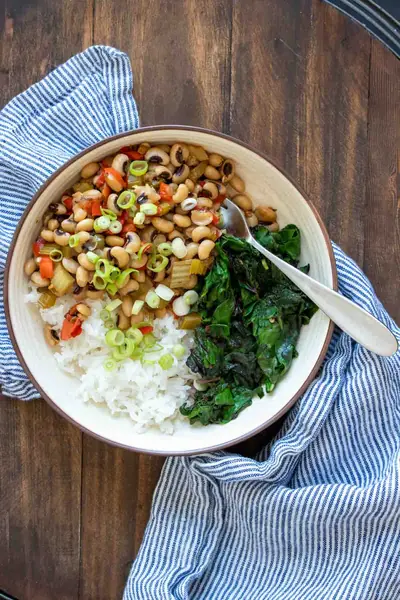

Southern Vegan Black Eyed Peas Recipe

Ingredients
- 1 cup sweet or yellow onion (, chopped)
- 3 cloves garlic (, chopped)
- 1 teaspoon sea salt
- Drizzle of oil or broth to sauté
- 1 cup celery (, chopped)
- 1 cup red pepper (, chopped)
- 1 jalapeno (, seeded and chopped)
- 1 teaspoon fresh thyme
- ¼ teaspoon cayenne pepper (, optional for added spice)
- ¼ teaspoon liquid smoke (, see note)
- 1 cup dried black eyed peas (, soaked overnight (see note)
- 3 cups veggie broth (, low sodium if needed)
- 4 cups cooked white or brown rice (I love the frozen cooked to make it fast)
- 1 bunch chard (slice and sauté (see note)
- Sliced green onions (garnish)
Steps
- Sauté the onion and salt in oil/broth until the onion is soft. About 5 minutes.
- Add in garlic and saute for 1-2 minutes until fragrant.
- Add the celery, red pepper, jalapeno, thyme, cayenne and liquid smoke. Sauté about 3 more minutes until the celery and pepper are just beginning to soften
- Add in the black eyes and broth. Simmer covered for 25-30 minutes until beans are soft. Uncover and cook 5 or so minutes until all the liquid has evaporated.
- Serve with rice and chard and garnish with green onions!
Recipe by Anjali Shah, from The Picky Eater. Saved here for personal use; the original has the full notes, tips and photos. Open original